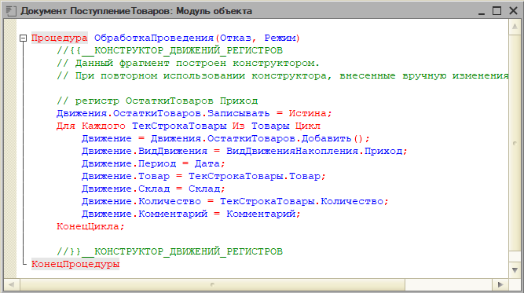
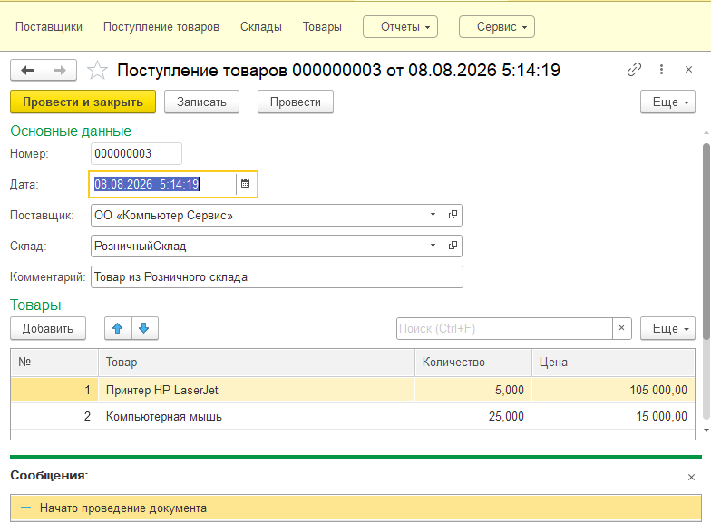
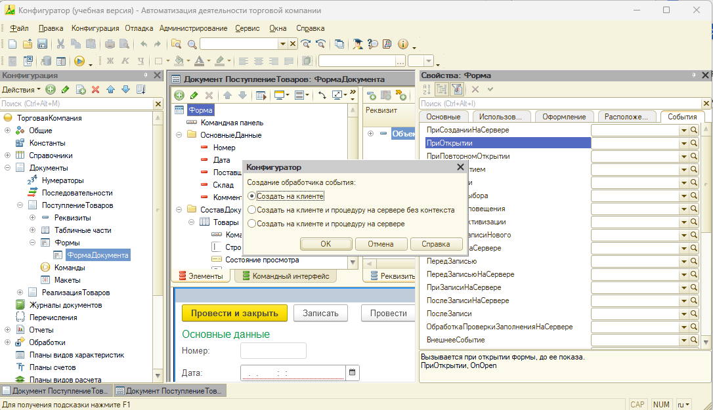
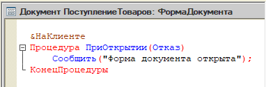
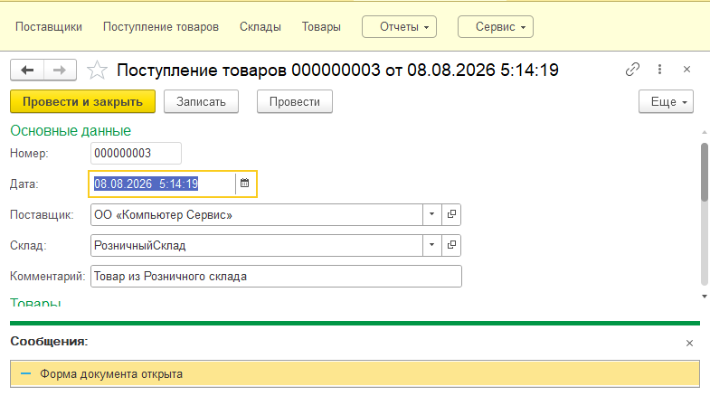
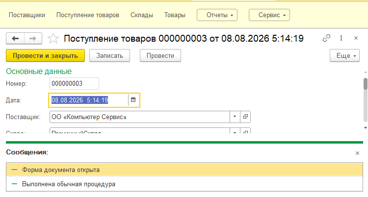
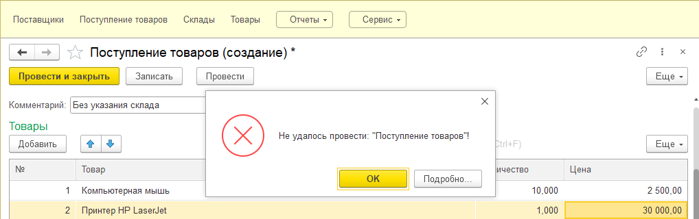
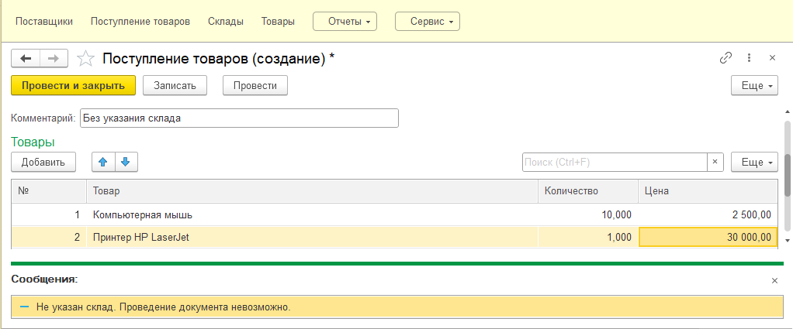

Цель работы
получить практические навыки работы с программными модулями системы «1С:Предприятие», изучить назначение модуля объекта и модуля формы, исследовать механизм событий и обработчиков событий, а также научиться определять место размещения программного кода в зависимости от его назначения.
В результате выполнения лабораторной работы студент должен уметь:
- находить и открывать модуль объекта;
- находить и открывать модуль формы;
- определять назначение различных программных модулей;
- различать обычную процедуру и обработчик события;
- создавать обработчики событий;
- исследовать момент выполнения обработчиков;
- использовать параметры обработчиков событий;
- применять параметр «Отказ» для прерывания некорректной операции;
- анализировать последовательность выполнения программного кода;
- выбирать подходящее место размещения программной логики.
Порядок выполнения работы
Запустите учебную информационную базу в режиме «Конфигуратор».
В работе будет использоваться существующая конфигурация складского учета, разработанная в предыдущих лабораторных работах.
Убедитесь, что в конфигурации имеются:
- документ «Поступление товаров»;
- документ «Реализация товаров»;
- обработка «Основы программирования»;
- созданные управляемые формы;
- регистр накопления, используемый документами.
Сохраните конфигурацию перед началом работы.
Шаг 1. В дереве конфигурации найдите Документы → ПоступлениеТоваров. Откройте объект документа.
Шаг 2. Перейдите к его модулю объекта (через контекстное меню). В модуле найдите созданную ранее процедуру:
Процедура ОбработкаПроведения(Отказ, РежимПроведения)
...
КонецПроцедуры
Шаг 3. Не изменяя программный код, рассмотрите структуру процедуры (Рисунок 11.1).
Определите:
- имя обработчика;
- параметры;
- тело процедуры;
- завершение процедуры.
Контрольный результат.
Необходимо установить, что «ОбработкаПроведения» находится в модуле объекта документа, а не в модуле его формы.

Рассмотрите программный код «ОбработкаПроведения».
Определите, какие данные документа используются при формировании движений.
Найдите обращения к:
- складу;
- табличной части Товары;
- товару;
- количеству;
- регистру накопления.
Обратите внимание на цикл обработки строк табличной части, если он используется.
Методическое замечание.
В предыдущих лабораторных работах этот алгоритм рассматривался как механизм формирования движений. Теперь его необходимо анализировать с точки зрения событийной модели.
Процедура «ОбработкаПроведения(...)» не вызывается пользователем непосредственно. Ее вызывает платформа, когда выполняется проведение документа.
Контрольный результат.
Студент должен уметь объяснить связь:
Проведение документа → Событие →
Вызов ОбработкаПроведения() → Формирование движений.
Шаг 1. Чтобы увидеть момент выполнения события, временно добавьте в начало процедуры «ОбработкаПроведения» диагностическое сообщение «Сообщить("Начато проведение документа")».
Пример:
Процедура ОбработкаПроведения(Отказ, РежимПроведения)
Сообщить("Начато проведение документа");
// существующий алгоритм формирования движений
КонецПроцедуры
Не удаляйте существующий алгоритм проведения.
Шаг 2. Сохраните изменения и обновите конфигурацию базы данных.
Шаг 3. Запустите режим «1С:Предприятие». Откройте существующий документ «Поступление товаров» или создайте тестовый документ и выполните команду «Провести».
В области сообщений должна появиться строка: «Начато проведение документа» (Рисунок 11.2).
Контрольный результат.
Студент должен убедиться, что обработчик вызывается автоматически именно при проведении документа.
Шаг 4. После фиксации результата диагностическое сообщение можно удалить, чтобы оно не выводилось пользователю при каждом дальнейшем проведении.

Шаг 1. Анализ модуля формы.
- Вернитесь в Конфигуратор. Откройте созданную ранее форму документа: Документы → ПоступлениеТоваров → Формы → ФормаДокумента.
- Перейдите на вкладку «Модуль». Убедитесь, что модуль формы документа «Поступление товаров» не содержит программного кода, поскольку для данной формы ранее не создавались программные обработчики.
Важно. Наличие пустого модуля формы не является ошибкой. Программный код появляется в нем по мере создания обработчиков событий формы, ее элементов и команд либо при добавлении разработчиком вспомогательных процедур и функций.
Шаг 2. Создание обработчика события.
- Перейдите на вкладку «Элементы» редактора формы. В дереве элементов выделите корневой элемент «Форма» и откройте его свойства. В свойствах формы перейдите к событиям и найдите событие «ПриОткрытии» (Рисунок 11.3).
- Создайте для него обработчик. Платформа должна создать процедуру соответствующего события.
- В тело обработчика добавьте «Сообщить("Форма документа открыта")» (Рисунок 11.4);
Важно. Не следует просто вручную писать процедуру с именем ПриОткрытии. Обработчик необходимо назначить событию формы средствами редактора.


Шаг 1. Сохраните изменения и обновите конфигурацию базы данных.
Шаг 2. Запустите режим «1С:Предприятие».
- Перейдите в раздел «Складской учет» и откройте документ «Поступление товаров».
- При открытии формы должно появиться сообщение «Форма документа открыта».
Шаг 3. Закройте форму и откройте ее повторно. Сообщение должно появиться снова (Рисунок 11.5).
Контрольный результат.
Обработчик события «ПриОткрытии» выполняется при каждом открытии соответствующей формы.

Шаг 1. Откройте модуль формы:
- В дереве конфигурации последовательно откройте:
Документы → ПоступлениеТоваров → Формы → ФормаДокумента
- В редакторе формы перейдите на вкладку «Модуль».
После выполнения предыдущего задания в модуле должен находиться созданный обработчик события ПриОткрытии, например:
&НаКлиенте
Процедура ПриОткрытии(Отказ)
Сообщить("Форма документа открыта");
КонецПроцедуры
Состав параметров автоматически созданного обработчика изменять не следует. Используйте тот вариант процедуры, который сформировала платформа в вашей конфигурации.
Шаг 2. Создайте обычную процедуру:
После строки «КонецПроцедуры», завершающей обработчик «ПриОткрытии», добавьте новую процедуру:
&НаКлиенте
Процедура ПоказатьИнформацию()
Сообщить("Выполнена обычная процедура");
КонецПроцедуры
В результате в модуле будут находиться две отдельные процедуры.
Обратите внимание: «ПоказатьИнформацию()» создается не внутри «ПриОткрытии», а как самостоятельная процедура.
Шаг 3. Проверьте работу программы без вызова новой процедуры.
- На данном этапе не добавляйте вызов «ПоказатьИнформацию()».
- Сохраните изменения, обновите конфигурацию базы данных.
- Запустите систему в режиме «1С:Предприятие».
- Откройте документ «Поступление товаров».
Поскольку событие открытия формы связано с процедурой «ПриОткрытии», должно выполниться сообщение «Форма документа открыта».
При этом сообщение «Выполнена обычная процедура» появиться не должно.
Почему?
Процедура ПоказатьИнформацию() существует в модуле, однако сама по себе она не запускается. Для ее выполнения необходим явный вызов из другого программного кода.
Это принципиально отличает ее от обработчика «ПриОткрытии», который вызывается платформой автоматически при наступлении соответствующего события.
Шаг 4. Вызовите обычную процедуру из обработчика события:
- Вернитесь в Конфигуратор и снова откройте модуль формы.
- В процедуру ПриОткрытии добавьте строку «ПоказатьИнформацию()»;
В результате код должен иметь следующий вид:
&НаКлиенте
Процедура ПриОткрытии(Отказ)
Сообщить("Форма документа открыта");
ПоказатьИнформацию();
КонецПроцедуры
&НаКлиенте
Процедура ПоказатьИнформацию()
Сообщить("Выполнена обычная процедура");
КонецПроцедуры
Шаг 5. Проследите последовательность выполнения:
Теперь при открытии формы произойдет следующая последовательность:
1. Пользователь открывает форму документа.
2. Возникает событие «ПриОткрытии».
3. Платформа автоматически вызывает назначенный этому событию обработчик.
4. Выполняется «Сообщить("Форма документа открыта")»;
5. Затем программа встречает «ПоказатьИнформацию()»;
6. Управление передается процедуре «ПоказатьИнформацию».
7. Выполняется «Сообщить("Выполнена обычная процедура")»;
После окончания ПоказатьИнформацию() управление возвращается в ПриОткрытии.
Шаг 6. Проверьте результат:
- Сохраните изменения и обновите конфигурацию базы данных.
- Запустите «1С:Предприятие» и повторно откройте документ «Поступление товаров».
Теперь должны последовательно появиться два сообщения: «Форма документа открыта» и «Выполнена обычная процедура».
- Закройте форму и откройте ее еще раз. Последовательность должна повториться.

Шаг 7. Сравнение процедур:
По результатам эксперимента изучите таблицу сравнения процедур:
| Характеристика | ПриОткрытии | ПоказатьИнформацию |
|---|---|---|
| Является процедурой | Да | Да |
| Размещена в модуле формы | Да | Да |
| Связана с событием формы | Да | Нет |
| Вызывается платформой автоматически | Да | Нет |
| Требует явного вызова из программного кода | Нет | Да |
| Содержит собственный алгоритм | Да | Да |
Контрольный вывод.
Процедура ПриОткрытии является обработчиком события. Она связана с событием открытия формы и вызывается платформой автоматически при наступлении этого события. Процедура «ПоказатьИнформацию» является обычной вспомогательной процедурой и выполняется только после явного вызова из программного кода.
- Рассмотрите параметры созданного обработчика «ПриОткрытии».
- Сравните их с параметрами «ОбработкаПроведения(Отказ, РежимПроведения)» и ранее созданного обработчика «ВыполнитьПример(Команда)».
- Сделайте вывод о том, что набор параметров зависит от конкретного события.
Контрольный результат.
Параметры обработчиков задаются не произвольно, а определяются механизмом соответствующего события.
В обработчик проведения документа платформа передает параметр «Отказ». С его помощью программный код может сообщить платформе о невозможности успешного завершения выполняемой операции.
В данном задании необходимо запретить проведение документа «Поступление товаров», если в нем не указан склад.
Шаг 1. Откройте модуль объекта документа:
- Перейдите в режим «Конфигуратор».
- В дереве конфигурации найдите Документы → ПоступлениеТоваров.
- Откройте документ и перейдите в его модуль объекта.
- Найдите процедуру:
Процедура ОбработкаПроведения(Отказ, РежимПроведения)
...
КонецПроцедуры
Это уже знакомый обработчик события проведения документа.
- Обратите внимание на первый параметр процедуры «Отказ».
Значение этого параметра может быть изменено программным кодом обработчика.
Шаг 2. Определите условие, при котором проведение должно быть запрещено:
- Документ «Поступление товаров» содержит реквизит Склад.
- Для корректного отражения поступления товаров необходимо знать, на какой склад они поступили. Поэтому документ с незаполненным складом не должен формировать движения.
- Необходимо реализовать следующий алгоритм:
Начало проведения документа
↓
Проверка реквизита «Склад»
↓
Склад заполнен?
↙ ↘
Нет. Да.
↓ ↓
Вывести сообщение. Продолжить проведение
↓
Установить Отказ
Шаг 3. Добавьте проверку заполнения склада:
В начале процедуры «ОбработкаПроведения», до формирования движений документа, добавьте проверку.
Поскольку Склад является ссылочным реквизитом, для учебного примера целесообразно использовать универсальную проверку заполненности значения:
Если Не ЗначениеЗаполнено(Склад) Тогда
Сообщить("Не указан склад. Проведение документа невозможно.");
Отказ = Истина;
Возврат;
КонецЕсли;
В результате начало процедуры будет выглядеть примерно следующим образом:
Процедура ОбработкаПроведения(Отказ, РежимПроведения)
Если Не ЗначениеЗаполнено(Склад) Тогда
Сообщить("Не указан склад. Проведение документа невозможно.");
Отказ = Истина;
Возврат;
КонецЕсли;
// Далее располагается существующий
// программный код формирования движений документа
КонецПроцедуры
Не удаляйте существующий код формирования движений документа. Новая проверка добавляется перед ним.
Шаг 4. Проанализируйте программный код:
Рассмотрим назначение каждой строки.
- Команда «Если Не ЗначениеЗаполнено(Склад) Тогда».
Функция «ЗначениеЗаполнено()» проверяет, содержит ли переданное значение значимые данные.
Ключевое слово «Не» изменяет результат логической проверки на противоположный. Следовательно, условие выполняется, если реквизит «Склад» не заполнен.
2. Команда «Сообщить("Не указан склад. Проведение документа невозможно.")» выводит пользователю информацию о причине невозможности проведения.
3. Затем выполняется «Отказ = Истина».
Тем самым обработчик сообщает платформе, что выполняемая операция не должна успешно завершиться.
4. Последующая команда «Возврат» прекращает дальнейшее выполнение текущей процедуры. Поэтому расположенный ниже алгоритм формирования движений в данном случае выполняться не будет.
Шаг 5. Сохраните изменения и обновите конфигурацию базы данных.
Шаг 6. Проверьте работу при незаполненном складе:
- Запустите информационную базу в режиме «1С:Предприятие».
- Откройте раздел, содержащий документ «Поступление товаров».
- Создайте новый тестовый документ.
- Заполните необходимые данные документа и добавьте товар в табличную часть, но поле «Склад» оставьте незаполненным.
- Попытайтесь провести документ командой «Провести» или «Провести и закрыть».
Установки параметра Отказ = Истина платформа дополнительно выводит стандартное сообщение о невозможности проведения документа (Рисунок 11.7).
Ожидаемый результат:
При попытке проведения документа с незаполненным реквизитом «Склад» пользователь должен получить диагностическое сообщение «Не указан склад. Проведение документа невозможно.» (Рисунок 11.8).
Зафиксируйте полученный результат для отчета.


Шаг 7. Проверьте работу при заполненном складе:
- Теперь укажите склад в том же документе.
- Повторно выполните команду «Провести».
Условие «Если Не ЗначениеЗаполнено(Склад) Тогда» теперь будет ложным, поэтому команды внутри конструкции «Если» выполняться не будут. Программа перейдет к существующему алгоритму формирования движений.
При отсутствии других ошибок документ должен быть проведен обычным образом.
Шаг 8. Исследуйте назначение параметра «Отказ»:
Обратите внимание, что параметр Отказ не создавался нами самостоятельно. Он уже присутствует в заголовке обработчика «Процедура ОбработкаПроведения(Отказ, РежимПроведения)».
Платформа передает его обработчику при вызове процедуры. В программном коде мы только изменяем его значение «Отказ = Истина».
Следовательно, параметр выполняет роль средства взаимодействия между прикладным программным кодом и механизмом платформы.
Схематично:
Пользователь нажимает «Провести»
↓
Платформа вызывает ОбработкаПроведения(...)
↓
Программа проверяет Склад
↓
Склад не заполнен
↓
Отказ = Истина
↓
Платформа получает признак отказа
↓
Проведение не завершается успешно
Важно понимать, что «Отказ» и «Возврат» выполняют разные функции.
- «Отказ = Истина» сообщает механизму платформы о том, что операция должна быть отменена.
- «Возврат» прекращает дальнейшее выполнение текущей процедуры.
Поэтому в нашем учебном алгоритме используются обе команды:
Отказ = Истина;
Возврат;
Первая фиксирует необходимость отказа от операции, вторая не позволяет программе перейти к расположенному ниже коду формирования движений.
Шаг 9. Исследуйте ошибочный вариант программы
Рассмотрите следующий вариант:
Если Не ЗначениеЗаполнено(Склад) Тогда
Отказ = Истина;
Иначе
Отказ = Ложь;
КонецЕсли;
На первый взгляд он кажется логичным:
- если склад отсутствует — установить Истина;
- если склад указан — установить Ложь.
Однако такой подход использовать без необходимости не следует.
В процессе обработки параметр «Отказ» мог уже получить значение Истина в результате другой проверки.
Безусловное присваивание «Отказ = Ложь» может сбросить ранее установленный признак отказа.
Поэтому более корректный принцип состоит в следующем:
Если обнаружена ошибка, обработчик устанавливает «Отказ = Истина». Если ошибки нет, уже имеющееся значение параметра без необходимости не изменяется.
Шаг 10. Добавьте вторую проверку:
Для закрепления материала можно расширить алгоритм и проверить наличие строк в табличной части «Товары».
Например:
Если Товары.Количество() = 0 Тогда
Сообщить("Не добавлены товары. Проведение документа невозможно.");
Отказ = Истина;
Возврат;
КонецЕсли;
Тогда начало обработчика будет содержать уже две проверки:
Процедура ОбработкаПроведения(Отказ, РежимПроведения)
Если Не ЗначениеЗаполнено(Склад) Тогда
Сообщить("Не указан склад. Проведение документа невозможно.");
Отказ = Истина;
Возврат;
КонецЕсли;
Если Товары.Количество() = 0 Тогда
Сообщить("Не добавлены товары. Проведение документа невозможно.");
Отказ = Истина;
Возврат;
КонецЕсли;
// Существующий алгоритм формирования движений
КонецПроцедуры
Теперь документ может быть проведен только в том случае, если указан склад и табличная часть содержит хотя бы одну строку.
Шаг 11. Проведите итоговый эксперимент.
Проверьте три ситуации:
| № | Склад | Товары | Ожидаемый результат |
|---|---|---|---|
| 1 | Не заполнен | Есть | Проведение запрещено |
| 2 | Заполнен | Нет | Проведение запрещено |
| 3 | Заполнен | Есть | Проведение разрешено |
Зафиксируйте результаты.
Вывод.
Параметр «Отказ» позволяет обработчику события сообщить платформе о невозможности успешного выполнения текущей операции. В обработчике «ОбработкаПроведения» установка «Отказ = Истина» применяется при обнаружении условий, препятствующих проведению документа. В сочетании с предварительной проверкой данных это позволяет предотвращать формирование некорректных движений и обеспечивает выполнение установленных правил прикладной логики.
Определите, в каком модуле следует разместить каждый из следующих алгоритмов:
| Задача | Место размещения |
|---|---|
| Формирование движений документа | Модуль объекта |
| Проверка обязательных данных перед проведением | Модуль объекта |
| Вывод сообщения при открытии конкретной формы | Модуль формы |
| Изменение видимости кнопки | Модуль формы |
| Реакция на нажатие команды формы | Модуль формы |
| Универсальный расчет для нескольких объектов | Общий модуль |
Контрольные вопросы
- Что представляет собой программный модуль?
- Для чего предназначен модуль объекта?
- Для чего предназначен модуль формы?
- Для чего используются общие модули?
- Где располагается ОбработкаПроведения?
- Кто вызывает ОбработкаПроведения?
- Что называется событием?
- Что представляет собой обработчик события?
- Чем обычная процедура отличается от обработчика события?
- Почему недостаточно просто написать процедуру с именем события формы?
- Где создается обработчик ПриОткрытии?
- Когда выполняется ПриОткрытии?
- Для чего обработчикам передаются параметры?
- Что содержит параметр Команда?
- Для чего используется параметр Отказ?
- Какое значение устанавливают параметру Отказ при невозможности продолжения операции?
- Почему не рекомендуется необоснованно присваивать Отказ = Ложь?
- Для чего используется РежимПроведения?
- Как связаны события формы и модуль формы?
- Как связаны события объекта и модуль объекта?
Содержание отчета
Отчет по лабораторной работе должен содержать:
- Тему и цель работы;
- Изображение модуля объекта документа;
- Фрагмент ОбработкаПроведения;
- Результат исследования события проведения;
- Изображение модуля формы;
- Результат создания обработчика ПриОткрытии;
- Сравнение обычной процедуры и обработчика события;
- Пример использования параметра Отказ;
- Ответы на контрольные вопросы;
- Вывод по работе.
Проверьте себя
Ответьте на вопросы по выполненной лабораторной работе. В каждом вопросе выберите один правильный вариант ответа.